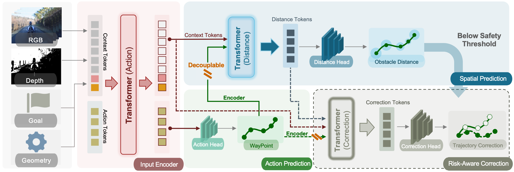
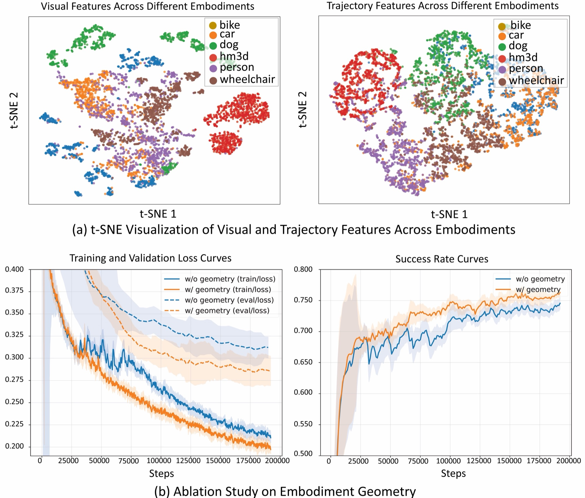
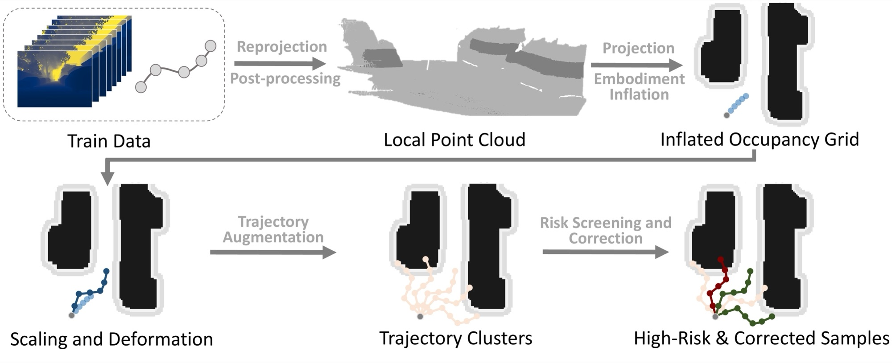
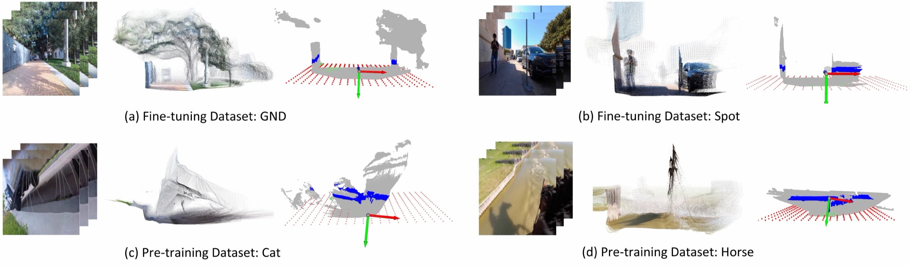
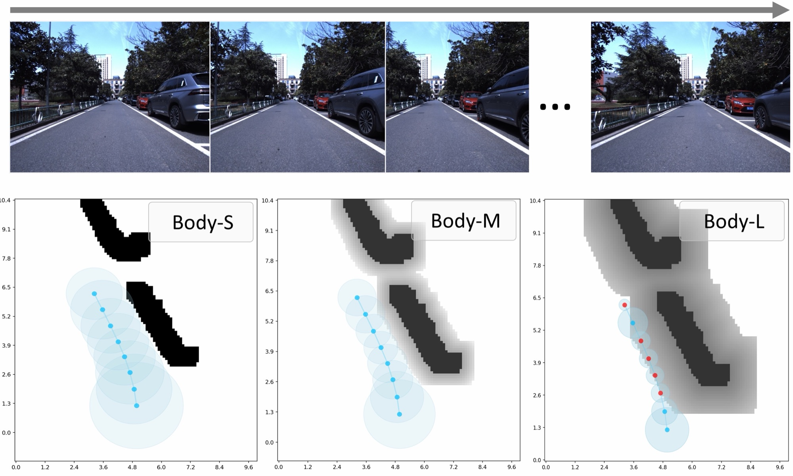
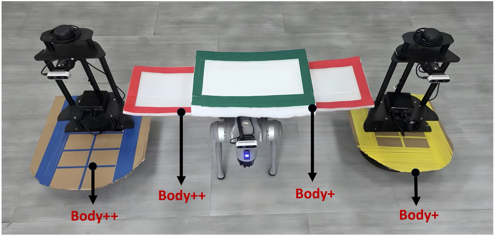
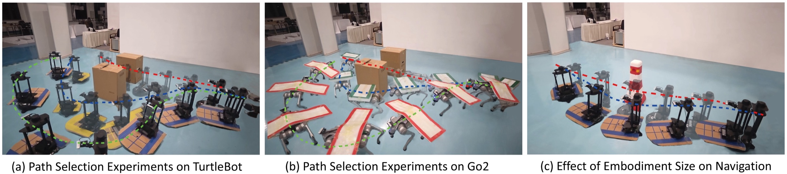

*Equal contribution †Corresponding authors
Cross-embodiment navigation is a key challenge in embodied intelligence. Due to differences in embodiment, the same visual observation may imply different actions for different agents, making prediction ambiguous when relying solely on vision. Existing studies mainly rely on reinforcement learning, which requires large-scale interaction and careful reward design, making it difficult to support scalable pretraining and real-world adaptation. In contrast, imitation-learning-based approaches remain limited. To address these challenges, we propose an imitation-learning-based embodiment-aware navigation framework with a modular multi-stage design. In pretraining, we construct a cross-embodiment navigation dataset from Internet videos and introduce embodiment geometry as conditional tokens to reduce action ambiguity under the same observation. In fine-tuning, we design a multimodal information injection mechanism based on a decoupled architecture. Specifically, we design a trajectory augmentation strategy to generate high-risk samples, which are used to train spatial perception and risk-aware correction separately, thereby explicitly incorporating embodiment geometry for safe navigation. Experimental results show that the proposed method effectively improves navigation performance across different embodiment settings, demonstrating the effectiveness of incorporating embodiment geometry into embodied navigation.
We collect roughly 1,000 hours of real-world first-person video from the Internet spanning eight embodiment categories — including people, cats, dogs, horses, bicycles, karts, and cars. Depth, trajectories, and camera intrinsics are annotated automatically with Depth-Anything-3; embodiment geometry is annotated per category. Navigation pretraining only requires scale consistency between trajectories and observations, not exact metric alignment, which makes web-scale video usable. Compared with existing datasets, ours offers by far the broadest embodiment coverage.
Comparison with existing navigation datasets. Our dataset covers eight embodiment categories — the broadest coverage among real-world first-person navigation datasets.
| Dataset | Embodiments | Hours | Source | Supervision | Camera |
|---|---|---|---|---|---|
| SCAND | 2 | 9 | Real | GT | Pinhole |
| TartanGround | 3 | ~40 | Synthetic | GT | Pinhole |
| LeLaN | 2 | 129 | Real | Pseudo | Fisheye |
| CityWalker | 2 | 2000 | Real | Pseudo | Pinhole |
| FrodoBots-2k | 2 | 2000 | Real | Pseudo | Fisheye |
| OmniVLA | 3 | 9500 | Real | Pseudo | Fish & Pin |
| Ours | 8 | 1000 | Real | Pseudo | Pinhole |
EA-Nav takes an image sequence, the current depth observation, an egocentric goal, and a 4-dimensional embodiment vector m = [Lb, Wb, Hb, Pmax] (length, width, height, and maximum traversable height), and predicts an 8-step action sequence. The pipeline follows a prediction → perception → correction structure, with the three heads decoupled so that risk perception and correction can be trained on augmented high-risk trajectories.

RGB (DINOv3-S) and depth (ConvNeXt-T) features, together with goal and geometry tokens, are projected into a shared 384-d space, giving 130 context tokens — far more than the 8–10 used by prior work, preserving fine-grained spatial detail. A unidirectional cross-attention lets the action query read the context without writing back to it, keeping the shared representation clean for the downstream modules.
Decodes the action tokens into a sequence of linear and angular velocities, then converts them into a local waypoint trajectory and encodes it as an explicit spatial trajectory feature for the two downstream modules to reason over.
Predicts the minimum obstacle distance at each waypoint and flags the trajectory as high-risk when it falls below the safety threshold δs = 0.5 m. Because this task needs finer, more geometry-aware features than action regression, its loss is allowed to update the shared context — which proves critical for convergence.
Triggered only above the risk threshold. Instead of regressing a new action sequence, it predicts a low-dimensional global yaw offset over 19 bins spanning [−45°, 45°] at 5° intervals, with multi-hot supervision capturing the one-to-many nature of recovery. At inference, the feasible bin with the smallest deviation is selected.
The t-SNE projection in Figure 3(a) makes the ambiguity concrete. Visual features from different embodiments overlap heavily — they organize by scene appearance rather than by who is moving, so a policy that sees only pixels has no signal telling it which behaviour is expected. Trajectory features separate into far cleaner per-embodiment groups: a car, a dog, and a person crossing the same space leave visibly different paths. The mapping from observation to action is therefore one-to-many unless something identifies the body.
Embodiment geometry supplies exactly that. The ablation in Figure 3(b) toggles the geometry tokens with everything else held fixed. Conditioning lowers the training loss and — more tellingly — the validation loss, so the gain is not memorization: the model is resolving an ambiguity it previously had to average over. The success rate is consistently higher across pretraining, and the validation-loss gap persists to the end of the run rather than closing, indicating the benefit comes from better-posed supervision rather than merely faster optimization.

Real navigation datasets contain almost no collisions, so there is little to learn risk perception and correction from. We synthesize them offline in three steps: fuse short-horizon depth observations into a robot-centric point cloud, fit the ground plane with RANSAC and inflate obstacles by the robot's own dimensions to build an embodiment-aware occupancy grid, then scale and rotate the original trajectory to sweep a candidate pool. Colliding candidates become risk trajectories; collision-free ones define the feasible correction bins used as multi-hot labels. All of this happens at training time only — never at test time.


On the i2Nav dataset across five embodiment radii (0.5 m to 2.5 m; Body-L lies outside the training range and tests generalization). Augmentation improves recognition of high-risk and collision samples by roughly 5× with almost no additional false alarms.

We deploy on a Unitree Go2 and a TurtleBot. To stress-test geometry awareness, each platform is physically widened in two stages (Body → Body+ → Body++) while the sensors and their mounting stay unchanged — so the observation is identical and only the embodiment vector m changes.

Evaluated on InternUtopia with NavDP assets across three difficulty levels. Adding the perception and correction modules improves average performance by roughly 31%, with the largest gains in the more cluttered Scene 2 and Scene 3.
Navigation results in simulation. Success rate (SR) and success weighted by path length (SPL) on InternUtopia with NavDP assets across three difficulty levels.
| Method | Scene 1 | Scene 2 | Scene 3 | |||
|---|---|---|---|---|---|---|
| SR ↑ | SPL ↑ | SR ↑ | SPL ↑ | SR ↑ | SPL ↑ | |
| iPlanner | 0.66 | 0.54 | 0.50 | 0.39 | 0.30 | 0.18 |
| NavDP | 0.73 | 0.63 | 0.60 | 0.52 | 0.56 | 0.41 |
| NoMaD* | 0.55 | 0.39 | 0.44 | 0.31 | 0.36 | 0.22 |
| ExAug* | 0.61 | 0.42 | 0.46 | 0.33 | 0.38 | 0.24 |
| Ours (w/o correction) | 0.62 | 0.51 | 0.45 | 0.35 | 0.43 | 0.31 |
| Ours (w/ correction) | 0.70 | 0.59 | 0.62 | 0.51 | 0.60 | 0.49 |
* denotes image-goal navigation methods.
Five trials per method per setting on the two platforms above. Every baseline collapses to a 100% collision rate at Body++; EA-Nav keeps navigating.

Navigation results on real robots. Success rate (SR) and collision rate (CR) on the Go2 and TurtleBot platforms as the embodiment is physically widened from Body to Body++.
| Robot | Method | Body | Body+ | Body++ | |||
|---|---|---|---|---|---|---|---|
| SR ↑ | CR ↓ | SR ↑ | CR ↓ | SR ↑ | CR ↓ | ||
| Unitree Go2 | iPlanner | 0.20 | 1.00 | 0.20 | 1.00 | 0.00 | 1.00 |
| NavDP | 0.60 | 0.60 | 0.40 | 0.80 | 0.00 | 1.00 | |
| NoMaD* | 0.20 | 0.20 | 0.00 | 0.40 | 0.00 | 1.00 | |
| ExAug* | 0.20 | 0.20 | 0.20 | 0.40 | 0.00 | 1.00 | |
| Ours | 0.80 | 0.20 | 0.60 | 0.20 | 0.60 | 0.00 | |
| TurtleBot | iPlanner | 0.60 | 0.40 | 0.40 | 0.80 | 0.00 | 1.00 |
| NavDP | 0.80 | 0.00 | 0.60 | 0.60 | 0.00 | 1.00 | |
| NoMaD* | 0.20 | 0.20 | 0.00 | 0.60 | 0.00 | 0.60 | |
| ExAug* | 0.20 | 0.20 | 0.20 | 0.60 | 0.00 | 0.20 | |
| Ours | 0.60 | 0.20 | 0.60 | 0.40 | 0.40 | 0.20 | |
SR: success rate. CR: collision rate. Five trials per method per setting.
@inproceedings{zhang2026eanav,
title = {EA-Nav: Learning Safe Visual Navigation Policies with Embodiment Awareness},
author = {Zhang, Jialu and Du, Yong and Guo, Xianda and Sun, Shunwang and
Liu, Xinqi and Sun, Yue and Lu, Guodong and Sui, Wei and Li, Jituo},
booktitle = {Proceedings of the 34th ACM International Conference on Multimedia},
year = {2026}
}